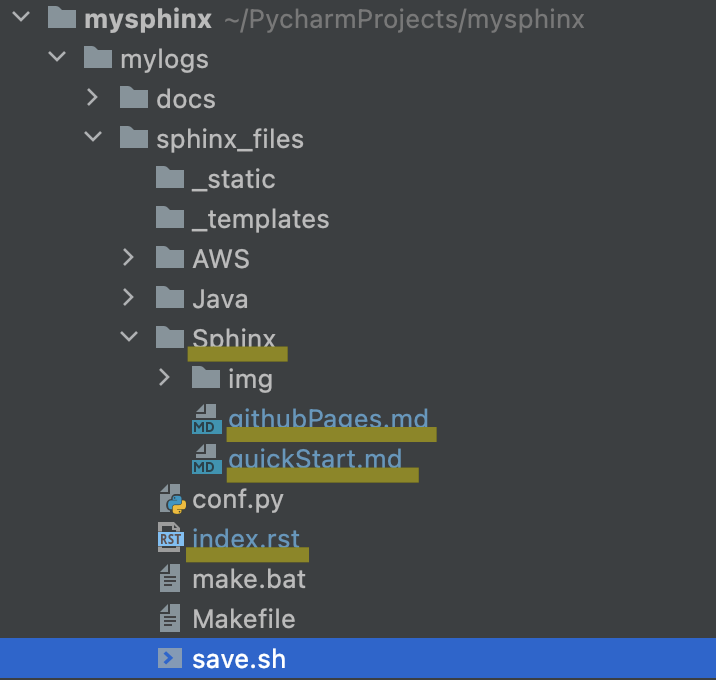
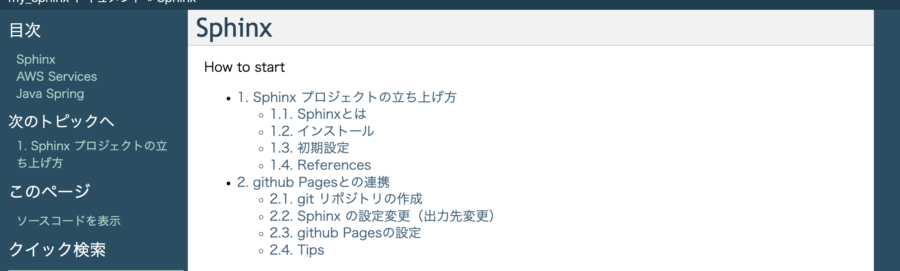

1. Sphinx プロジェクトの立ち上げ方¶
1.1. Sphinxとは¶
python製のドキュメント生成ツール
reSTやmarkdownで書かれたファイルをHTMLなどに変換する。
github Pagesと連携することで、github上でドキュメントを公開できる。
1.2. インストール¶
python環境がインストールされていることが前提
以下のコマンドでインストールされているか確認して、されていなければインストールする。
$ python -V
pipでsphinxをinstall
$ pip install sphinx
sphinxのquickstarを実行。対話形式で設定
$ sphinx-quickstart
Buildしてみる
$ make html
build/html/index.htmlをブラウザで開くと、quickstartの画面が確認できる。
1.3. 初期設定¶
1.3.1. 各種ファイルの役割¶
Makefileはmacでビルドするときに利用。
make.batはwindowsでビルドするときに利用する。
conf.pyは生成するドキュメントの設定を記載する。
index.rstはHTMLファイルの全体構成を記述するファイル
コンテンツは.mdや.rstで記載
1.3.2. index.rst¶
index.rstで全体構成を記載する。
セクション内で指定したDOCFILEがセクションのコンテンツになる。
ファイルを指定する際は拡張子は不要
maxdepthで指定された階層までのDOCFILEの階層が目次として出力される。
Sphinx
==================
.. toctree::
:maxdepth: 2
:caption: How to start
:numbered:
Sphinx/quickStart
Sphinx/githubPages
 
1.3.3. conf.py¶
1.3.3.1. 対象のドキュメントファイルにmdを追加する¶
conf.pyに以下を追加
source_suffix = ['.rst', '.md']
source_parsers = {'.md': 'recommonmark.parser.CommonMarkParser', }
extensions = ['recommonmark']